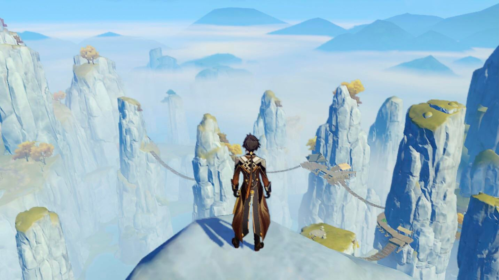

Liyue

Liyue is the Geo region in the game and is the next accesible region after Mondstadt. Liyue has many sub
areas such as Liyue Harbor, Mt. tianheng, Dihua Marsh, Wangshu Inn, Qingce Village and Jueyun Karst. Here
Liyue in game is based on China in the real world sharing many geographical and cultural similarities. Liyue
is known as
the City of Contracts where most of the daily lives of the citizen revolve around contracts. Whether it be
in commerce or in just keeping promises Liyue values their contracts. Liyue is known as the commerce center
of Teyvat as it is where merchants form other regions some to trade. Liyue also has an abundance of mines
and ores making it a great place to pick those up. Liyue is also home to a ground dragon known as Azhdaha
who lives underground and is later defeated by the traveler and Zhongli. Here in Liyue they don't have a
solid government but are run by the 7 most qualified buissiness people known as the Liyue QiXing (in Chinese
qixing means 7 stars) and are watched over by powerful beings known as Adepti. Liyue hasn't been through as
many wars as Mondstadt but have struggles through their own problems like floodings and famine.
Geo Archon

This is Morax, the Geo Archon of Liyue. Morax has the power to control the earth and rocks
and made some of the most incredible landmasses in Liyue such as Guyun Stone forest. Morax is also the
one who created the mora, a currency in Teyvat, for the whole world, which is then stored in the Golden
house. Morax's true form not actually human but he is a dragon. Morax took on this human form because of
a revelation he made, being an Archon was lonely. he got tired of it eventually after several centuries
and fakes his death. To hide
his
identity he goes by the name of Zhongli and works at a funeral parlor. Today Morax is known for his vast
knowledge especialy in the rites of passing. After Osial had sunked once more Morax ends up giving away
his gnosis, somewhat like a
vision but holds great power, after forming a contract with La Signora. A man named Childe Tartaglia, a
fatui harbinger, was
also after his gnosis but was beaten to it by Signora, also a fatui harbinger. Without
his gnosis he is weaker but is still very strong.
Geography and Regional Specialties

In Liyue the topography is mostly high mountains and peaks with few plains in between. It is very
notable that Liyue has hight mountains because these are the highest you can go in the game and can give
amazing views of the lands below. Some mountains were actually created by Morax in the Archon war when
he rained stone spears on his enemies. In liyue there are many regional specialties for upgrading
characters, these are: Cor Lapis, Glaze Lilies, Jueyun Chilies, Noctilucous Jade, Qingxin, Silk Flowers,
Starconches and Violetgrass. These materials are unique to certain areas like Corlapis in caves and
mountain sides while Silk Flowers are found in Liyue Harbor and Wangshu Inn.